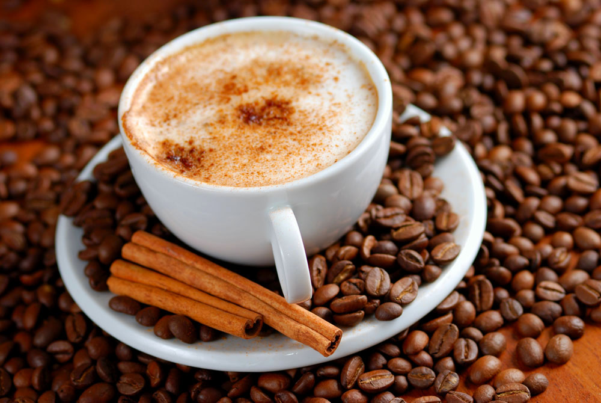
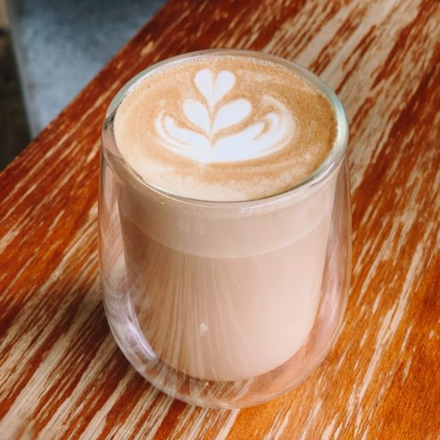
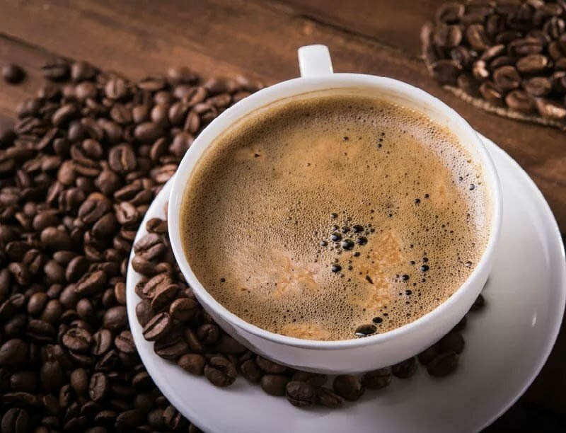
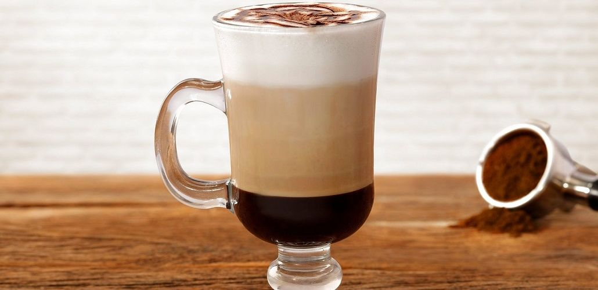

Рецепты кофе
Эспрессо

Ингредиенты:
- 7-9 г свежемолотого кофе в зернах (средний помол)
- 60-70 мл горячей воды (90-96°C)
Инструкции:
- Насыпьте молотый кофе в холдер кофемашины, равномерно распределив его.
- Утрамбуйте кофе с помощью темпера (с усилием 25-30 кг).
- Запустите кофемашину на 25-30 секунд. Должно получиться около 30 мл эспрессо.
- Наслаждайтесь!
Примечание: Время экстракции и количество воды могут варьироваться в зависимости от кофемашины и желаемого вкуса.
Капучино
Ингредиенты:
- Эспрессо (60 мл)
- Вспушенное молоко (120 мл)
- Какао-порошок (по желанию)
Инструкции:
- Приготовьте эспрессо.
- Взбейте молоко до образования плотной пены.
- Аккуратно вылейте взбитое молоко в чашку с эспрессо.
- Посыпьте какао-порошком (по желанию).
- Наслаждайтесь!
Примечание: Соотношение эспрессо и молока может варьироваться по вашему вкусу.
Латте
Ингредиенты:
- Эспрессо (60 мл)
- Горячее молоко (150-180 мл)
- Молочная пена (немного)
Инструкции:
- Приготовьте эспрессо.
- Взбейте немного молока в пену.
- Добавьте горячее молоко в чашку.
- Аккуратно влейте эспрессо.
- Сверху добавьте немного молочной пены.
- Наслаждайтесь!
Примечание: Латте - это напиток с большим количеством молока, чем капучино.
Американо
Ингредиенты:
- Эспрессо (60 мл)
- Горячая вода (90-120 мл)
Инструкции:
- Приготовьте эспрессо.
- Добавьте горячую воду в чашку с эспрессо.
- Перемешайте.
- Наслаждайтесь!
Примечание: Американо - это разбавленный эспрессо.
Мокачино
Ингредиенты:
- Эспрессо (60 мл)
- Шоколадный сироп (20-30 мл)
- Вспушенное молоко (120 мл)
- Взбитые сливки (по желанию)
Инструкции:
- Приготовьте эспрессо.
- Добавьте шоколадный сироп в чашку.
- Влейте эспрессо.
- Добавьте взбитое молоко.
- Украсьте взбитыми сливками (по желанию).
- Наслаждайтесь!
Примечание: Количество шоколадного сиропа регулируйте по вашему вкусу.